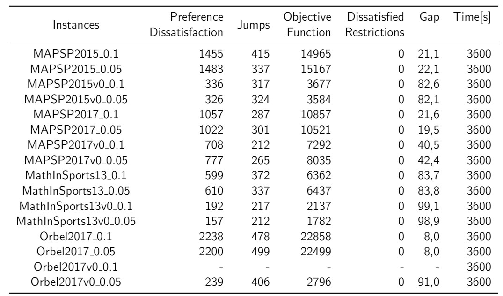
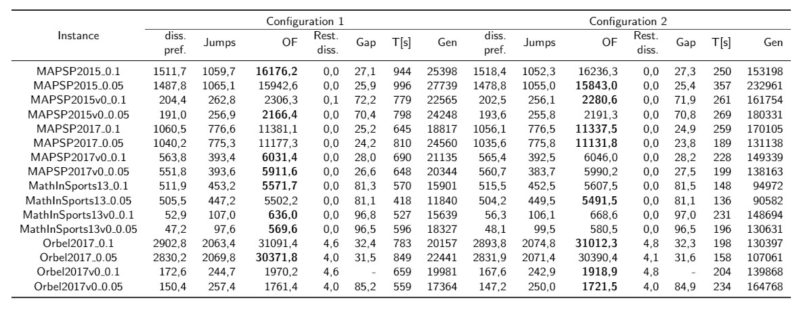

Computer Science Engineering Thesis - Conference Scheduling
Conferences are an important event for the researchers and scientifics to present their own work. To make this event possible require a big number of elements and coordination between a lot of people, which is not an easy task to do.
One of the most important aspects of a Conference is the schedule that will have, usually this is made based on the presenters availability, which is the logical way to do it, since is the information given to the organizers beforehand.
This way on making schedules is not always the best way, since it will leave many assistants dissatisfied, cause they will not be able to attend every desired talk. With this problem in mind, borns the way to make schedules considering the preferences from every assistant to the conference.
The goal to this problem is to Minimize the conflicts of each assistant and Minimize the jumps between each session.
Having all this in mind, in this thesis I designed and developed a genetic algorithm to try to create the best schedule to given conferences.
Genetic Algorithm
To try to find a good schedule was used genetic algorithms, which are based on the Darwin's theory of evolution, in which a population will try to survive to the conditions given, having crossing, mutation, selection to adapt to the new conditions through the different generations.
This algorithm was tested on two different types of instances, small ones which are fake and fabricated by myself and the real ones, which are based on real conferences and considering the preferences of the actual assistants to those Conferences.
Also these instances were testes on a commercial solver called gurobi to compare the results.
The solutions given by the solver:
The solutions given by the algorithm (Bold ones are the best solution between configurations):
In general the results from the genetic algorithm were pretty good in comparison with the solver. In most instances got better results in 20% of the time that the solver took.